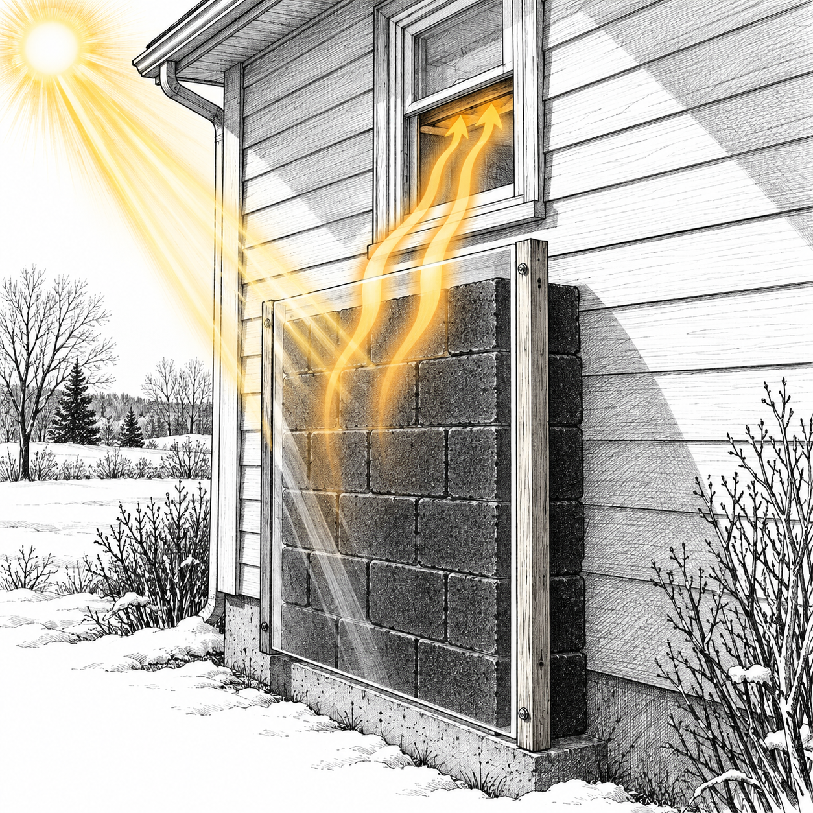
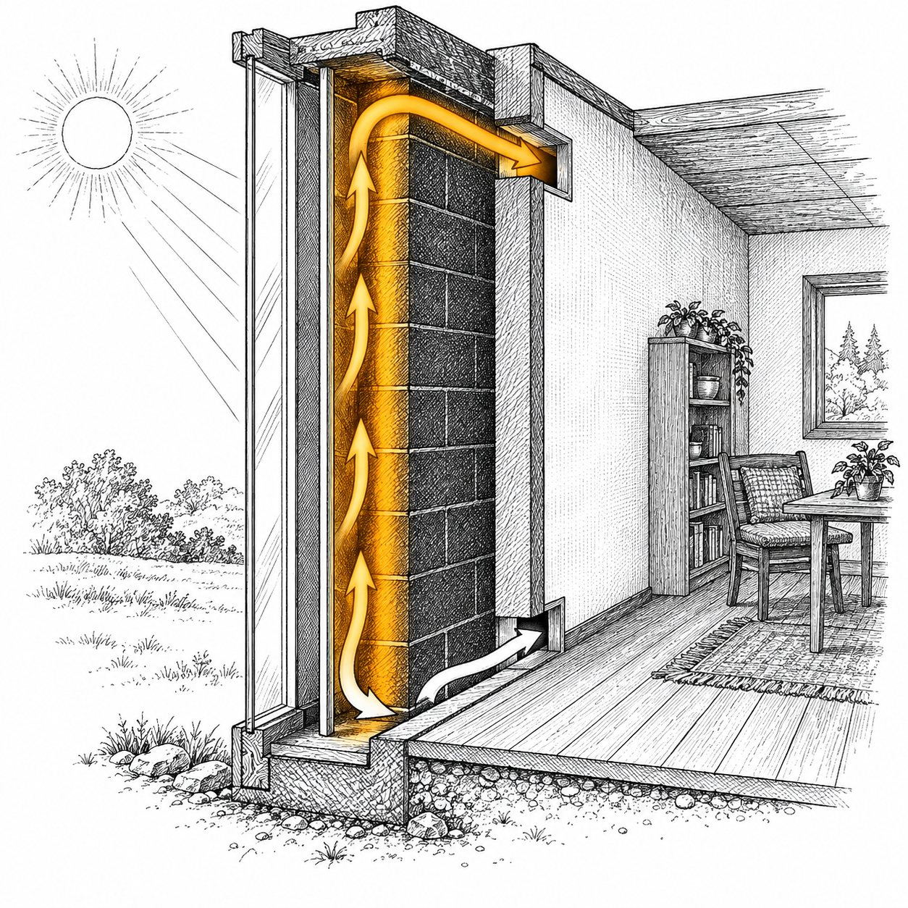
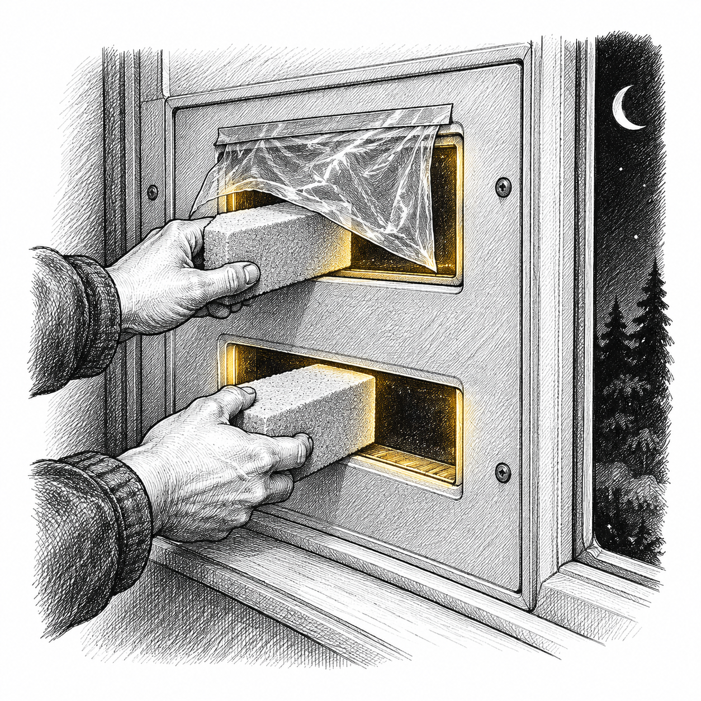

Sketchy Survival 101 · Free Cheat Sheet
The 60 Dollar Wall That Beats a 10,000 Dollar Furnace
A DIY Trombe wall. Free daytime heat from the winter sun, no power, no fuel, no fan.
A Trombe wall is a stack of black painted concrete blocks behind a clear sheet, leaning on your sunny south wall. Sunlight passes the clear cover, hits the black face, and turns to heat. Warm air rises out a top vent while cool air is pulled in a low vent, a self feeding loop called a thermosiphon. No fan, no pump, no power. It heats only while the sun is up, and you close two little vents at dusk so it cannot run backward at night.
Why it works
Space heaterA patch of direct winter sun the size of a plywood sheet carries about as much power as a big plug in space heater.
Over 100 FOutlet air can climb past 100 degrees Fahrenheit on a good day. Even 80 degree air into a 50 degree room feels warm.
Head onA vertical south wall catches low winter sun almost head on, and mostly sheds the high summer sun.
Matte blackMatte black soaks up far more sunlight than pale siding, so the black face is the engine.

Black blocks behind a clear sheet on a sunny wall. Warm air rises off the hot face.
Real proof
The visitor center at Zion National Park runs a much bigger built in Trombe wall that covers about a fifth of its winter heat. A new gas furnace runs about 4,000 to 8,000 dollars installed, and a heat pump swap can top 10,000 to 12,000. This wall still runs in a blackout when the furnace is dead.
What to buy
The Shopping List
About 130 dollars all new, about 60 dollars if the blocks and the poly are scavenged.
about 60 dollars
Twin wall polycarbonate. One 4 by 8 foot sheet, less on a farm store closeout or a used greenhouse panel.
about 10 dollars
Flat black high heat paint. For the block face, so it soaks up the sun.
about 10 dollars
Foam weatherstrip tape and a foam board for the window panel.
free to a few dollars
Scrap lumber for the frame, free off a pallet, or a few dollars.
about 2 dollars each
Concrete blocks, new, and often free on the curb.
tools and time
A saw, a drill, a brush. One afternoon to build, plus a day for the paint to cure.
About 60 to 130 dollars
Sixty dollars scavenged, about 130 dollars all new. Either way it beats a furnace bill by thousands, and it runs when the grid is down.
Build it in one afternoon
- Pick the wall. Choose a south facing wall in the Northern Hemisphere that stays sunny from about 9 in the morning to 3 in the afternoon, right under a window that opens.
- Stack and paint the blocks. Stack concrete blocks under the window, hollow cores standing up, low and wide, and brace it if you go higher. Paint the face flat black and let it cure fully outside. No blocks? Use black painted water jugs.
- Mount the clear sheet. Mount the twin wall polycarbonate about 2 inches off the black face on a scrap lumber frame, all four sides. Seal the outside edges with foam tape and screw the frame into the wall.
- Cut the vents. Fill the window with a foam panel. Cut a low opening and a high opening, each about the size of a sheet of paper. Put a divider down the gap so cool room air goes in low, down to the bottom, up the hot front, and back out warm up high.
The loop and the night setup
Close It At Dusk
The thermosiphon runs itself all day. At night you shut it down so it cannot pull heat back out.
The air loop
Cool room air is pulled in the low vent, sinks to the bottom of the gap, warms as it climbs the hot black face, and returns to the room through the high vent. It feeds itself with no fan and no power, as long as the sun is on the wall.
Night setup, every dusk
- Tape a garbage bag flap over the inside of the upper vent, top edge only, so it acts as a one way valve.
- Stuff foam plugs into both vents at dusk, every dusk, so warm room air cannot drain back out through the cold wall overnight.
- Water holds more heat per pound than concrete, so black painted water jugs work as the mass too.

Cool air in low, down the gap, up the hot face, warm air out high.
Before you build
Stay Safe, Then Enjoy the Heat
A few rules keep this cheap wall from becoming a hazard. Read them before you cut a single vent.

The night damper: a garbage bag flap on the top vent, foam plugs in both.
Safety, do not skip
- Never block a bedroom's only fire escape window. If that is the only way out, use a different wall.
- Cure the high heat black paint fully outside before you seal the glass, so the fumes finish outdoors.
- Screw the frame into the wall. A loose sheet becomes a sail in a storm.
- Keep the block stack low and wide, or brace it. A tall loose stack can tip.
- Water jugs can freeze and split on a brutal night. Drain them in a hard freeze if the wall is not running.
- In summer, close and cover it or the room overheats.
- This is for education. Know your own skills and your local codes before you build.
Watch the full video: youtube.com/@SketchySurvival101
More free sheets: sketchysurvival101.com/free
Subscribe so the next cold snap does not catch you paying to stay warm.